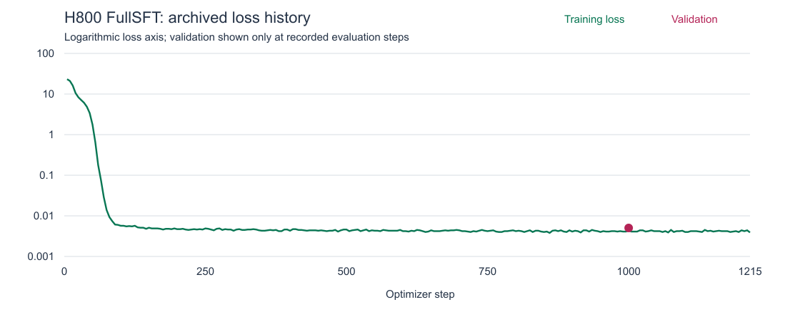

正在读取题目…
XVR-EVAL / JUL 2026
多视角空间推理 · 实验阅览
1,866 题 · 同流程三模型对比
H800 全参数 SFT · 最佳 checkpoint 1000
Base · Qwen3-VL-2B21.44%
400 / 1,866
Author · Qwen3-VL-2B-XVR68.38%
1,276 / 1,866
Ours · H800 FullSFT72.24%
1,348 / 1,866 · +3.86 pp vs Author
数据集：XVR-Eval [1][2] · Base / Author 模型 [3][4] · 上方分数均为本次同流程实测，非论文原表 [6]
正在读取归档数据…
结果 JSON ↓完整结果与训练记录 [6]
| 任务 ID | 题数 | Base | Author | H800 FullSFT |
|---|
本次训练配置
- 训练 / 验证
- 103,576 / 3,208
- 训练方式
- 全参数 SFT · 3 epochs
- Batch / 累积
- 4 / 64 · 有效 batch 256
- Learning rate
- 5 × 10⁻⁵
- Optimizer steps
- 1,215 · 最佳 checkpoint 1000

结果口径
主表为相同题目、提示词和官方归档 scorer 的三模型比较：batch 4，max_new_tokens 64，regex parser，dual scoring，无额外 answer-only 指令。上游训练与评测代码见 [5]；本次已离线逐题复算，并核对题目顺序、标准答案和提示词 [6]。上游当前版本不等同于本次归档版本。
本次 H800 72.24% 比归档报告记录的论文值 68.06% 高 4.18 个百分点；后者是跨报告比较，不是新的论文表格核验或显著性检验。原论文入口见 [1]，该引用不表示已重新核对 68.06%。初次 H800 评测 71.70% 和旧提示词基线 37.41% 属于不同运行，未混入主表。Token Trace 属于另一次诊断运行，不替换主结果，也不代表隐藏思维过程 [6]。
题目与图片来自 XVR 数据集 [2]。本站图片为原始评测图片的展示副本，最长边 768 像素；不用于重跑评测。原图与展示副本 SHA256 见 图片来源清单。任务采用原始 ID，避免旧报告 task6/task11 命名差异。当前公开阅览范围仅为 XVR-Eval，不含其他数据集和后续 VaLR 实验。
参考文献与实验来源
- Suchae Jeong, Jaehwi Song, et al. Learning Multi-View Spatial Reasoning from Cross-View Relations. CVPR, 2026, pp. 2570–2581. 论文 · 官方项目页。
- XVR 作者团队. XVR 数据集：题目、多视角图片与标准答案来源。Jaehwisong/XVR。本站展示副本经过缩放与 JPEG 编码，原始素材权利以各自来源为准。
- Qwen Team. Qwen3-VL-2B-Instruct：本次 Base 与 FullSFT 初始化模型。官方模型卡。
- XVR 作者团队. Qwen3-VL-2B-XVR：本次 Author 对照模型。作者模型卡。
- XVR 作者团队. Cross-View-Relations：上游训练、数据生成与评测实现。官方代码仓库。本页参数以本次归档配置为准。
- 本项目. H800 FullSFT 复现实验记录，2026 年 7 月，非同行评审论文。实测分数 · 逐题复算记录 · 原始结果与独立 Token Trace 的路径及 SHA256。主表分数来自本次运行，非论文原表；完整研究归档保存在私有仓库。
外部来源链接核对日期：2026-10-11。文献用于标明方法、数据与模型来源，不代表上游作者认可本次复现结论。